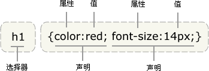

Reglas de estilo de código CSS

Validez del código CSS
Utilice código CSS válido siempre que sea posible.
Utilice código CSS válido, a menos que se trate de errores del validador CSS o se requiera sintaxis propietaria.
Utilice herramientas comoW3C CSS validatorpara probar la validez.
El uso de CSS válido es un estándar de calidad importante. Si encuentra código CSS que no tiene ningún efecto, puede eliminarlo para asegurar un uso adecuado del CSS.
Nomenclatura de ID y class
Asigne nombres genéricos y significativos a los ID y class.
Debería poder deducirse del nombre del ID o class para qué se usa el elemento, en lugar de un nombre superficial o ambiguo.
Se debe priorizar nombrar según el propósito específico del elemento; así es más fácil de entender y reduce actualizaciones.
Se pueden agregar nombres genéricos a elementos hermanos que no son especiales ni tienen un significado individual, como 'helpers'.
Usar nombres funcionales o genéricos reduce modificaciones innecesarias en documentos o plantillas.
/* 不推荐: 无意义 不易理解 */
#yee-1901 {}
/* 不推荐: 表达不具体 */
.button-green {}
.clear {}
/* 推荐: 明确详细 */
#gallery {}
#login {}
.video {}
/* 推荐: 通用 */
.aux {}
.alt {}
Estilo de nomenclatura de ID y class
Cuando no sea necesario, los nombres de ID y class deben ser lo más cortos posible.
Comunique brevemente de qué se trata el ID o class.
De esta manera, el código es fácil de entender y eficiente.
/* 不推荐 */
#navigation {}
.atr {}
/* 推荐 */
#nav {}
.author {}
Selectores de tipo
Evite usar selectores de tipo CSS.
Cuando no sea necesario, no combine nombres de etiquetas de elementos con ID o class.
Por consideraciones de rendimiento, evite usar nodos ancestros como selectores.performance reasons.
/* 不推荐 */
ul#example {}
div.error {}
/* 推荐 */
#example {}
.error {}
Abreviaturas de propiedades
Use abreviaturas al escribir valores de propiedades.
Muchas propiedades CSS admiten abreviaturasshorthand(por ejemplo,
font
). Use abreviaturas siempre que sea posible, incluso si solo se establece un valor.
El uso de abreviaturas mejora la eficiencia del código y facilita la comprensión.
0 y unidades
Cuando no sea necesario,
0
no agregue unidades después.
margin: 0; padding: 0;
Decimales que comienzan con 0
Omita el 0 antes del punto decimal.
Para valores o longitudes entre -1 y 1, el 0 antes del punto decimal
0
puede omitirse.
font-size: .8em;
Comillas en URI
Omita las comillas fuera del URI.
No use
url()
comillas en (
""
,
''
) 。
Hexadecimal
Use hexadecimal de 3 caracteres siempre que sea posible.
Se usa al agregar valores de color; el hexadecimal de 3 caracteres es más corto y conciso.
/* 不推荐 */ color: #eebbcc; /* 推荐 */ color: #ebc;
Prefijos
Agregue un prefijo con un identificador de aplicación especial delante del selector (opcional).
En proyectos grandes, es mejor agregar este tipo de prefijo identificativo (espacio de nombres) delante de los nombres de ID o class, usando guiones cortos.
El uso de espacios de nombres evita conflictos de nombres y facilita el mantenimiento, por ejemplo en operaciones de búsqueda y reemplazo.
Delimitadores en la nomenclatura de ID y class
Cuando los nombres de ID y class estén compuestos por varias palabras, sepárelas con un guion corto '-'.
No use conectores distintos al guion corto '-' en los nombres de selectores (incluido ningún conector), para facilitar la comprensión y búsqueda de los nombres.
/* 不推荐：“demo”和“image”中间没加“-” */
.demoimage {}
/* 不推荐：用下划线“_”是屌丝的风格 */
.error_status {}
/* 推荐 */
#video-id {}
.ads-sample {}
Hacks
Es mejor evitar los malditos 'hacks' de CSS — intente primero usar otras soluciones.
Aunque resulta tentador usarlos como detección de agente de usuario o filtros CSS especiales, su comportamiento ocurre con demasiada frecuencia y daña a largo plazo la eficiencia del proyecto y la gestión del código, así que busque otras soluciones si es posible.
Reglas de formato de código CSS
Orden de declaraciones
Declare en orden alfabético.
Declarar todo en orden alfabético es fácil de recordar y mantener.
Ignore la ordenación de los prefijos específicos del navegador, pero los prefijos de una misma propiedad CSS para múltiples navegadores deben mantener un orden relativo (por ejemplo, el prefijo -moz va antes que -webkit).
background: fuchsia; border: 1px solid; -moz-border-radius: 4px; -webkit-border-radius: 4px; border-radius: 4px; color: black; text-align: center; text-indent: 2em;
Sangría del contenido de bloques de código
Indente todo el contenido de los bloques de código (entre '{}').
Indente todo el contenido de losbloques de código, ya que mejora la claridad de la jerarquía.
Terminación de declaraciones
Todas las declaraciones deben terminar con ';'.
Por consistencia y extensibilidad, agregue un punto y coma al final de cada declaración.
/* 不推荐 */
.test {
display: block;
height: 100px
}
/* 推荐 */
.test {
display: block;
height: 100px;
}
Terminación del nombre de propiedad
Agregue un espacio después de los dos puntos del nombre de propiedad.
Por razones de consistencia, agregue un espacio entre el nombre de la propiedad y su valor (no entre el nombre y los dos puntos).
/* 不推荐 */
h3 {
font-weight:bold;
}
/* 推荐 */
h3 {
font-weight: bold;
}
Separar selectores y declaraciones en líneas
Separe selectores y declaraciones en líneas diferentes.
Cada selector y declaración debe ir en una línea independiente.
/* 不推荐 */
a:focus, a:active {
position: relative; top: 1px;
}
/* 推荐 */
h1,
h2,
h3 {
font-weight: normal;
line-height: 1.2;
}
Separación de reglas en líneas
Cada regla debe ir en una línea independiente.
Deje una línea en blanco entre dos reglas.
html {
background: #fff;
}
body {
margin: auto;
width: 50%;
}
Reglas de metadatos CSS
Sección de comentarios
Escriba comentarios por grupos. (Opcional)
Si es posible, escriba un comentario unificado para un grupo de hojas de estilo según la categoría de funcionalidad, en una línea independiente.
/* Header */
#adw-header {}
/* Footer */
#adw-footer {}
/* Gallery */
.adw-gallery {}
Sección de quejas
Mantenga el principio de consistencia
Si va a editar código, tómese unos minutos para ver su estilo; si se hace de cierta manera, usted debería hacer lo mismo.
Con un estilo unificado, se crea un entorno de pensamiento común donde los participantes pueden concentrarse en lo que se dice, en lugar de pensar en qué idioma extraterrestre se está hablando. Aunque aquí proponemos reglas de estilo unificadas, es solo para que todos las conozcan y las tomen como referencia para ajustar su propio estilo. Por supuesto, mantener un estilo propio también es importante. Bla, bla, bla...
Haz clic para compartir notas
<p style="font-size:14px;">¡Las notas deben ser una extensión del contenido de este artículo!</p><br> <p style="font-size:12px;"><a href="../tougao.html" target="_blank">Para enviar un artículo, haga clic aquí</a></p> <p style="font-size:14px;"><a href="./runoob-user-test-intro.html" target="_blank">Cómo obtener el código de invitación de registro</a></p> <h3 class="text-muted"><i class="fa fa-info-circle" aria-hidden="true"></i> ¡Debe <a href=".." class="runoob-pop">iniciar sesión</a> antes de compartir notas!</h3> <p><a href="./runoob-user-test-intro.html" target="_blank">Cómo obtener el código de invitación de registro</a></p>